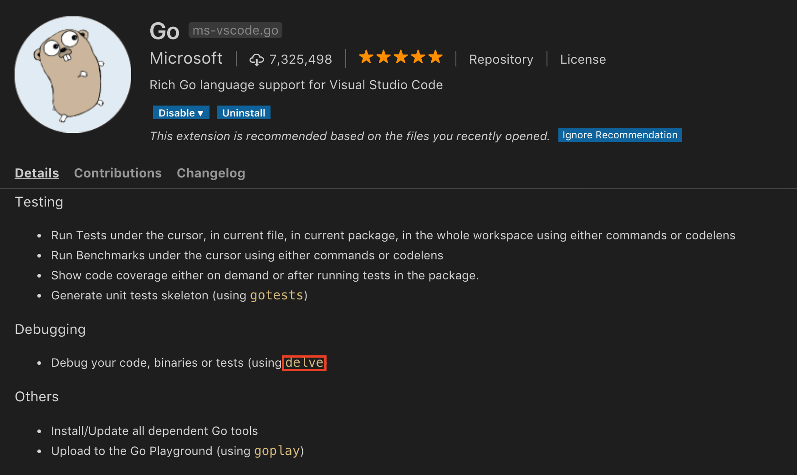
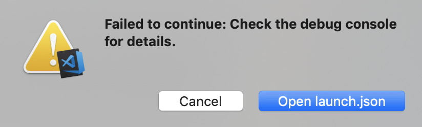

Visual Studio Code에서의 Go Debug 방법이다. 다른 IDE 및 다른 디버깅 툴은 아직 사용해보지 않았다.
사전 준비
Microsoft Visual Studio
GoExtension
Start Debugging 😈
두 가지 중 하나의 방법으로 디버깅을 시작할 수 있다.
상단 메뉴 바에서 [Debug] - [Start Debugging]
[F5] 단축키
처음 실행하면 아래와 같은 알림이 발생하는데 우측 [Open launch.json]을 선택한다.

그러면 아래처럼 기본 값으로 launch.json 파일이 생성된다.
1 | { |
값을 본인 설정에 맞게 바꾸어서 사용하면 된다. 옵션에 대한 설명은 링크를 참고한다.
내 경우 program 과 args 를 수정해서 사용하고 있다.
줄 번호 좌측으로 마우스를 가져다 대면 빨간 점을 찍을 수 있는데 이 점이 Break Point 가 되고, 정상적으로 디버깅이 시작되면 해당 위치에 멈춘다. 좌측 디버그 뷰에서 변수 값에 대한 조회가 가능하고 상단에 뜨는 메뉴 바에서 컨트롤이 가능하다.
💁♀️ Tip
macOS에서 위 과정이 순조롭지 않을 수 있다. 발생 가능한 문제가 있고 (나도 직면했고) 그에 대한 해결 방법도 더불어 정리한다.
정확도를 높이고자 이 과정을 다시 하면서 문제와 해결 방법을 적으려고 했는데, 개인 맥북에서는 문제가 발생하지 않는다. 회사 맥북에서는 문제가 있었고 해결했는데… 기억에 의존하여 적어두어야겠다.
- 디버깅을 시작했을 때 인증서 관련 에러가 나면서 진행되지 않는다면
- 동영상을 참고해서 Self-Signed Certificate 발급 진행 필요
delve설치가 제대로 되지 않았다면 아래 방법 중 하나를 해보는데- VSCode 명령 팔레트 (⌘ + ⇧ + P) 에서
Go: Install/Update Tools->dlv선택해서 설치/업데이트 delve를 직접 다운로드 받아 빌드 - 링크 참고
- VSCode 명령 팔레트 (⌘ + ⇧ + P) 에서
문제가 발생했다는 회사 맥북에서 나는 인증서 만들기랑 직접 다운로드 + 빌드로 해결했다. 경험 후 추천하는 방법은 delve 직접 다운로드인데, 다운로드 후 빌드 과정에서 인증서 만드는 스크립트가 실행되어 자동으로 인증서를 만들어주기 때문이다.
다른 것들은 따라하면 되니까 쉬운 일이고 이 문제와 해결 방법을 자세히 기술하고 싶었던 건데… 설명이 부족한 것 같아 아쉽다. 하지만 (내 경우만 봐도) 문제 발생 확률이 100%가 아니니까 문제 없이 설치되는 것이 베스트겠다.